第 4 章
认识色彩空间到艺术创作
本章共 7 个小节 · cvtColor、HSV、通道拆分合并、alpha 透明度
OpenCV 读取彩色图像时默认使用 BGR 顺序，而许多显示或绘图环境习惯使用
RGB。本章围绕 cv2.cvtColor()、cv2.split() 与
cv2.merge()，说明 BGR、RGB、GRAY、HSV、BGRA 等色彩空间之间的转换方式，并用
Hue、Saturation、Value 和 alpha 通道做出可观察的图像效果。
4-1
BGR 与 RGB 色彩空间的转换
OpenCV 的彩色图像通常以 BGR 顺序储存，也就是每个像素依次记录
Blue、Green、Red 三个通道。RGB 与 BGR 的转换本质上是交换红色与蓝色通道，常用函数是
cv2.cvtColor(src, code)。
dst = cv2.cvtColor(src, code)
| 转换方向 | 转换码 | 说明 |
|---|
| BGR 转 BGRA | cv2.COLOR_BGR2BGRA | 在 BGR 三通道基础上加入 alpha 透明通道。 |
| BGRA 转 BGR | cv2.COLOR_BGRA2BGR | 移除 alpha 通道，回到 BGR 三通道。 |
| BGR 转 RGBA | cv2.COLOR_BGR2RGBA | 交换红蓝通道，并加入 alpha 通道。 |
| RGBA 转 BGR | cv2.COLOR_RGBA2BGR | 移除 alpha 通道，并转换回 OpenCV 常用的 BGR 顺序。 |
| BGR 转 RGB | cv2.COLOR_BGR2RGB | 把 OpenCV 默认通道顺序改成常见 RGB 顺序。 |
| RGB 转 BGR | cv2.COLOR_RGB2BGR | 把 RGB 图像恢复成 OpenCV 常用 BGR 顺序。 |
| BGR 与 RGB 互换 | cv2.COLOR_BGR2RGB 或 cv2.COLOR_RGB2BGR | 两者都是交换第 1 和第 3 个通道，因此效果相同。 |
| BGR 转 GRAY | cv2.COLOR_BGR2GRAY | 彩色图像转成单通道灰阶图像。 |
| GRAY 转 BGR | cv2.COLOR_GRAY2BGR | 灰阶图像转成三通道 BGR；三个通道数值相同。 |
| BGR 转 HSV | cv2.COLOR_BGR2HSV | 把 BGR 图像转成 Hue、Saturation、Value 三通道。 |
| HSV 转 BGR | cv2.COLOR_HSV2BGR | 把 HSV 图像转回 BGR，方便用 OpenCV 正常显示。 |
程序实例 ch4_1.py：读取 view.jpg，并将 BGR 图像转为 RGB 图像
# ch4_1.py
import cv2
img = cv2.imread("view.jpg") # BGR 读取
cv2.imshow("view.jpg", img)
img_rgb = cv2.cvtColor(img, cv2.COLOR_BGR2RGB) # BGR 转 RGB
cv2.imshow("RGB Color Space", img_rgb)
cv2.waitKey(0)
cv2.destroyAllWindows()
左侧是 OpenCV 直接显示的 BGR 图像，右侧是交换红蓝通道后的 RGB 图像。颜色偏蓝说明通道解释方式已经改变。
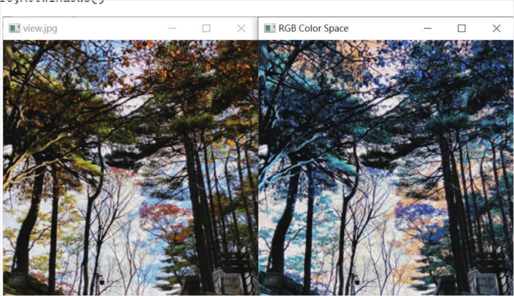
BGR 与 RGB 通道顺序转换结果，参考原书第 4-3 页。
书中接着用 ch4_2.py 将 RGB 图像再转回 BGR，使用
cv2.COLOR_RGB2BGR。ch4_3.py 进一步说明：
COLOR_BGR2RGB 与 COLOR_RGB2BGR 都是交换 B 与 R，因此在三通道影像上可视为同一种通道互换操作。
程序实例 ch4_2.py：将 RGB 图像转回 BGR 图像
# ch4_2.py
import cv2
img = cv2.imread("view.jpg") # BGR 读取
cv2.imshow("view.jpg", img)
img_rgb = cv2.cvtColor(img, cv2.COLOR_BGR2RGB) # BGR 转 RGB
cv2.imshow("RGB Color Space", img_rgb)
img_bgr = cv2.cvtColor(img_rgb, cv2.COLOR_RGB2BGR) # RGB 转 BGR
cv2.imshow("BGR Color Space", img_bgr)
cv2.waitKey(0)
cv2.destroyAllWindows()
程序实例 ch4_3.py：用 COLOR_BGR2RGB 执行同样的红蓝通道互换
# ch4_3.py
import cv2
img = cv2.imread("view.jpg") # BGR 读取
cv2.imshow("view.jpg", img)
img_rgb = cv2.cvtColor(img, cv2.COLOR_BGR2RGB) # BGR 转 RGB
cv2.imshow("RGB Color Space", img_rgb)
img_bgr = cv2.cvtColor(img_rgb, cv2.COLOR_BGR2RGB) # 再次交换 B/R，效果等同转回 BGR
cv2.imshow("BGR Color Space", img_bgr)
cv2.waitKey(0)
cv2.destroyAllWindows()
重点
如果用 Matplotlib 显示 OpenCV 读取的彩色图像，通常要先做 BGR 转 RGB，否则颜色会明显偏差。
4-2
BGR 色彩空间转换至 GRAY 色彩空间
GRAY 是单通道灰阶图像，没有 B、G、R 三个颜色比例。BGR 转 GRAY 时，OpenCV 会根据人眼对不同颜色的敏感度加权，
不是简单平均三个通道。
img_gray = cv2.cvtColor(img, cv2.COLOR_BGR2GRAY)
程序实例 ch4_4.py：读取 jk.jpg，并将彩色图像转为灰阶图像
# ch4_4.py
import cv2
img = cv2.imread("jk.jpg") # BGR 读取
cv2.imshow("BGR Color Space", img)
img_gray = cv2.cvtColor(img, cv2.COLOR_BGR2GRAY) # BGR 转 GRAY
cv2.imshow("GRAY Color Space", img_gray)
cv2.waitKey(0)
cv2.destroyAllWindows()
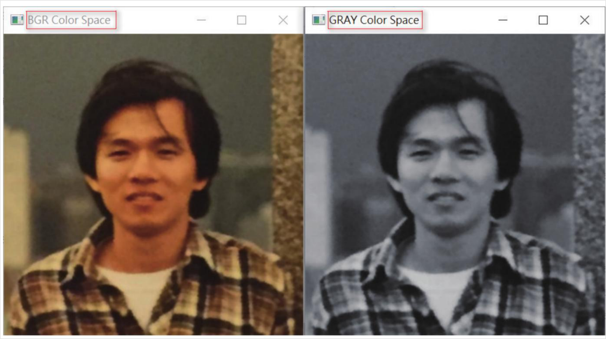
彩色图像转灰阶图像，参考原书第 4-5 页。
ch4_5.py 通过读取指定像素验证转换结果。书中使用的灰阶计算概念可写成：
Gray = 0.2989 * R + 0.5870 * G + 0.1140 * B
GRAY 转回 BGR 时可使用 cv2.COLOR_GRAY2BGR。转换后的图像虽然重新拥有三通道，
但三个通道数值相同，因此视觉上仍是灰阶。
程序实例 ch4_5.py：读取指定像素，比较 GRAY 与 BGR 通道值
# ch4_5.py
import cv2
pt_x = 169
pt_y = 118
img = cv2.imread("jk.jpg")
img_gray = cv2.cvtColor(img, cv2.COLOR_BGR2GRAY)
cv2.imshow("GRAY Color Space", img_gray)
px = img_gray[pt_x, pt_y]
print(f"Gray Color 通道值 = {px}")
img_color = cv2.cvtColor(img_gray, cv2.COLOR_GRAY2BGR)
cv2.imshow("BGR Color Space", img_color)
px = img_color[pt_x, pt_y]
print(f"BGR Color 通道值 = {px}")
cv2.waitKey(0)
cv2.destroyAllWindows()
GRAY 图像读取单个像素时得到一个数值；GRAY 转回 BGR 后，读取同一像素会得到 3 个相同或近似相同的通道值，例如 [128 128 128]。
4-3
HSV 色彩空间
HSV 以人类感知颜色的方式描述图像，由 Hue、Saturation、Value 三个分量组成。它比 RGB 更适合做颜色筛选、
色调调整和创意效果，因为颜色、饱和度与明暗可以分开处理。
原书补充了 HSV 的几何理解：Hue 可以看作绕圆柱旋转的角度，Saturation 是离中心轴的距离，Value 是高度。
黑色位于底部，白色位于顶部，因此 HSV 也常被画成圆柱或倒圆锥模型。
| 分量 | 意义 | OpenCV 常用范围 |
|---|
| H Hue | 色相，表示颜色所在角度，例如红、绿、蓝。 | 0 ~ 180 |
| S Saturation | 饱和度，值越高颜色越鲜艳，值越低越接近灰。 | 0 ~ 255 |
| V Value | 明度或亮度，值越高越亮，值为 0 时接近黑色。 | 0 ~ 255 |
范围
HSV 理论上 Hue 常以 0 到 360 度表示；OpenCV 为了配合 8-bit 图像，把 Hue 压缩为 0 到 180。
4-3-3 RGB 转 HSV 的计算关系
原书列出 RGB 转 HSV 的公式作为参考。实际开发中通常直接使用 cv2.cvtColor()，但理解公式有助于解释
Hue、Saturation、Value 分别改变了图像的哪一部分。
| 符号 | 说明 |
|---|
MAX | R、G、B 三个值中的最大值。 |
MIN | R、G、B 三个值中的最小值。 |
V | 亮度取 MAX。 |
S | 如果 MAX = 0，饱和度为 0；否则可由 (MAX - MIN) / MAX 得到。 |
H | 由最大通道是哪一个决定分段公式；当 MAX = MIN 时色相无定义。 |
程序实例 ch4_6.py：将 mountain.jpg 由 BGR 色彩空间转为 HSV 色彩空间
# ch4_6.py
import cv2
img = cv2.imread("mountain.jpg") # BGR 读取
cv2.imshow("BGR Color Space", img)
img_hsv = cv2.cvtColor(img, cv2.COLOR_BGR2HSV) # BGR 转 HSV
cv2.imshow("HSV Color Space", img_hsv)
cv2.waitKey(0)
cv2.destroyAllWindows()
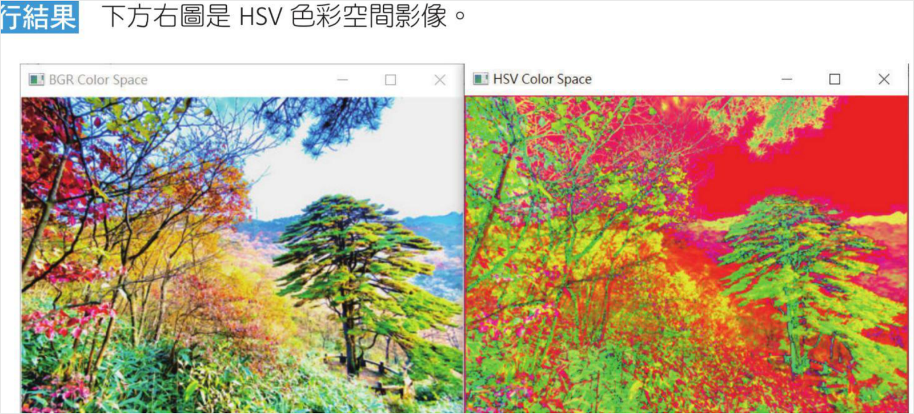
HSV 图像直接显示时会呈现特殊的伪彩色效果，参考原书第 4-9 页。
4-4
拆分色彩通道
cv2.split() 可以把多通道图像拆成多个单通道影像物件。BGR 图像拆分后会得到
blue、green、red 三个通道；HSV 图像拆分后会得到 hue、saturation、value 三个通道。
blue, green, red = cv2.split(image)
程序实例 ch4_7.py：拆分 colorbar.jpg 的 B、G、R 通道
# ch4_7.py
import cv2
image = cv2.imread("colorbar.jpg")
cv2.imshow("bgr", image)
blue, green, red = cv2.split(image)
cv2.imshow("blue", blue)
cv2.imshow("green", green)
cv2.imshow("red", red)
print(f"B通道影像属性 shape = {blue.shape}")
print("列印B通道内容")
print(blue)
cv2.waitKey(0)
cv2.destroyAllWindows()
拆分后的通道是单通道灰阶图像。哪一个区域变白，表示该通道在该区域的数值较高。
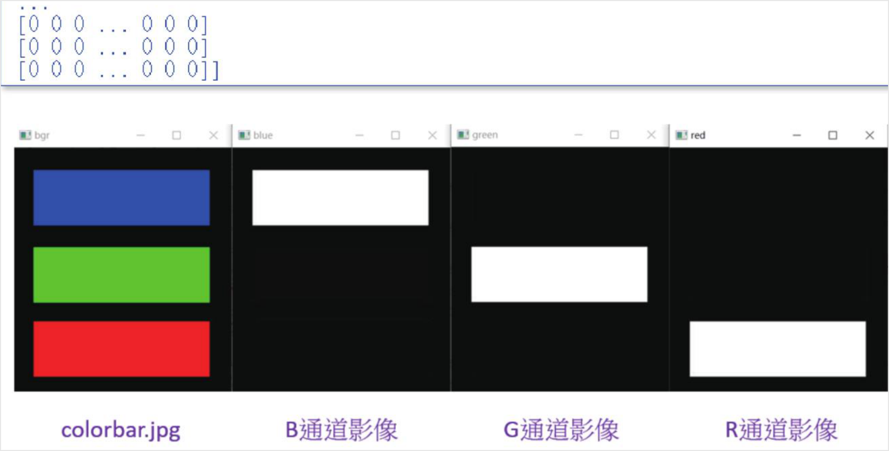
colorbar 的 B、G、R 通道拆分结果，参考原书第 4-11 页。
程序实例 ch4_8.py：拆分 mountain.jpg 并观察图像形状
# ch4_8.py
import cv2
image = cv2.imread("mountain.jpg")
cv2.imshow("bgr", image)
blue, green, red = cv2.split(image)
cv2.imshow("blue", blue)
cv2.imshow("green", green)
cv2.imshow("red", red)
print(f"BGR 影像：{image.shape}")
print(f"B通道影像：{blue.shape}")
print(f"G通道影像：{green.shape}")
print(f"R通道影像：{red.shape}")
cv2.waitKey(0)
cv2.destroyAllWindows()
彩色图像的 shape 是 (height, width, 3)，拆分后的单通道图像则是 (height, width)。
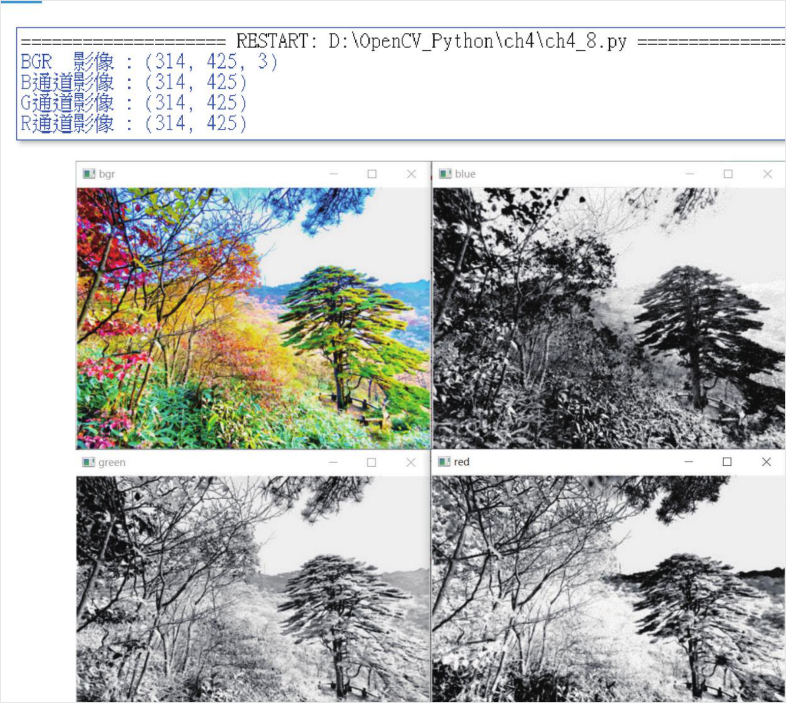
mountain.jpg 的 B、G、R 通道拆分结果，参考原书第 4-12 页。
ch4_8.1.py 继续列印 B、G、R 三个通道的矩阵内容，用来确认通道本身就是 Numpy 数组。
ch4_9.py 则把图像先转为 HSV，再拆分出 Hue、Saturation、Value 三个分量。
程序实例 ch4_8_1.py：列印 B、G、R 三个通道内容
# ch4_8_1.py
import cv2
image = cv2.imread("mountain.jpg")
cv2.imshow("bgr", image)
blue, green, red = cv2.split(image)
cv2.imshow("blue", blue)
cv2.imshow("green", green)
cv2.imshow("red", red)
print(f"BGR 影像：{image.shape}")
print("B通道内容：")
print(blue)
print("G通道内容：")
print(green)
print("R通道内容：")
print(red)
cv2.waitKey(0)
cv2.destroyAllWindows()
程序实例 ch4_9.py：拆分 HSV 图像的 H、S、V 通道
# ch4_9.py
import cv2
image = cv2.imread("mountain.jpg")
cv2.imshow("bgr", image)
hsv_image = cv2.cvtColor(image, cv2.COLOR_BGR2HSV)
hue, saturation, value = cv2.split(hsv_image)
cv2.imshow("hsv", hue)
cv2.imshow("saturation", saturation)
cv2.imshow("value", value)
cv2.waitKey(0)
cv2.destroyAllWindows()
4-5
合并色彩通道
cv2.merge() 可以把多个单通道图像重新合成为多通道图像。合并顺序会直接影响结果：
对 BGR 图像而言，正确顺序是 blue、green、red；如果改成 red、green、blue，红蓝通道会互换。
bgr_image = cv2.merge([blue, green, red])
程序实例 ch4_10.py：用不同顺序合并 B、G、R 通道
# ch4_10.py
import cv2
image = cv2.imread("street.jpg")
blue, green, red = cv2.split(image)
bgr_image = cv2.merge([blue, green, red]) # 依 B G R 顺序合并
cv2.imshow("B -> G -> R", bgr_image)
rgb_image = cv2.merge([red, green, blue]) # 依 R G B 顺序合并
cv2.imshow("R -> G -> B", rgb_image)
cv2.waitKey(0)
cv2.destroyAllWindows()
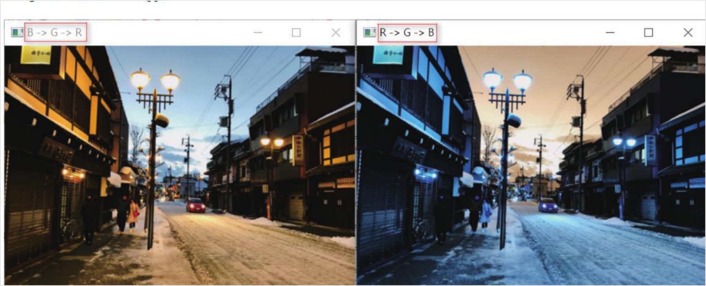
合并顺序不同，显示颜色也不同，参考原书第 4-15 页。
HSV 通道也可以合并。ch4_11.py 先把 BGR 转 HSV，拆分出 H、S、V 后再以原顺序合并；
因为 HSV 直接用 BGR 显示窗口解释，合并后的 HSV 图像会呈现特殊色彩。
程序实例 ch4_11.py：以 H、S、V 顺序重新合并 HSV 通道
# ch4_11.py
import cv2
image = cv2.imread("street.jpg")
hsv_image = cv2.cvtColor(image, cv2.COLOR_BGR2HSV)
hue, saturation, value = cv2.split(hsv_image)
hsv_image = cv2.merge([hue, saturation, value])
cv2.imshow("The Image", image)
cv2.imshow("The Merge Image", hsv_image)
cv2.waitKey(0)
cv2.destroyAllWindows()
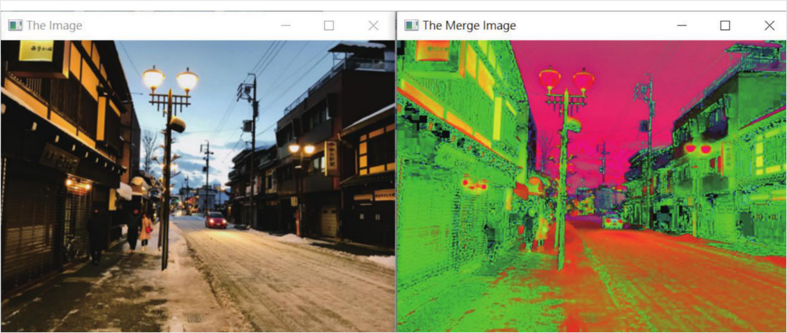
HSV 通道合并后直接显示的效果，参考原书第 4-17 页。
4-6
拆分与合并色彩通道的应用
通道拆分后可以直接修改某个分量，再合并回去。书中依次调整 Hue、Saturation、Value，用同一张
street.jpg 观察颜色、饱和度与明度对图像的影响。
4-6-1 色调 Hue 调整
程序实例 ch4_12.py：将 Hue 通道改为 200
# ch4_12.py
import cv2
image = cv2.imread("street.jpg")
hsv_image = cv2.cvtColor(image, cv2.COLOR_BGR2HSV)
hsv, saturation, value = cv2.split(hsv_image)
hsv[:, :] = 200
hsv_image = cv2.merge([hsv, saturation, value])
new_image = cv2.cvtColor(hsv_image, cv2.COLOR_HSV2BGR)
cv2.imshow("The Image", image)
cv2.imshow("The New Image", new_image)
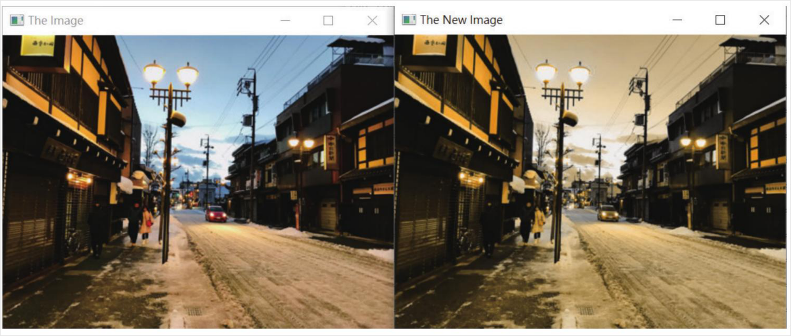
固定 Hue 后的色调变化，参考原书第 4-18 页。
书中还提供 ch4_12_1.py，用 hsv.fill(200) 代替切片赋值，可得到相同效果。
这里的 200 是为了演示明显色调变化；正式做颜色筛选时，仍应按 OpenCV HSV 的 Hue 有效范围设计阈值。
程序实例 ch4_12_1.py：用 fill() 修改 Hue 通道
# ch4_12_1.py 的关键差异
hsv.fill(200) # 等同于 hsv[:, :] = 200
4-6-2 饱和度 Saturation 调整
程序实例 ch4_13.py：将 Saturation 通道设为 255
# ch4_13.py
import cv2
image = cv2.imread("street.jpg")
hsv_image = cv2.cvtColor(image, cv2.COLOR_BGR2HSV)
hsv, saturation, value = cv2.split(hsv_image)
saturation.fill(255)
hsv_image = cv2.merge([hsv, saturation, value])
new_image = cv2.cvtColor(hsv_image, cv2.COLOR_HSV2BGR)
cv2.imshow("The Image", image)
cv2.imshow("The New Image", new_image)
cv2.waitKey(0)
cv2.destroyAllWindows()
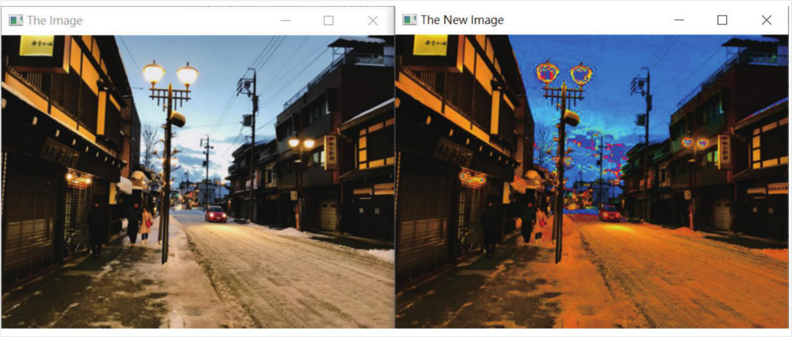
提高饱和度后颜色更强烈，参考原书第 4-19 页。
4-6-3 明度 Value 调整
程序实例 ch4_14.py：将 Value 通道设为 255
# ch4_14.py
import cv2
image = cv2.imread("street.jpg")
hsv_image = cv2.cvtColor(image, cv2.COLOR_BGR2HSV)
hsv, saturation, value = cv2.split(hsv_image)
value.fill(255)
hsv_image = cv2.merge([hsv, saturation, value])
new_image = cv2.cvtColor(hsv_image, cv2.COLOR_HSV2BGR)
cv2.imshow("The Image", image)
cv2.imshow("The New Image", new_image)
cv2.waitKey(0)
cv2.destroyAllWindows()
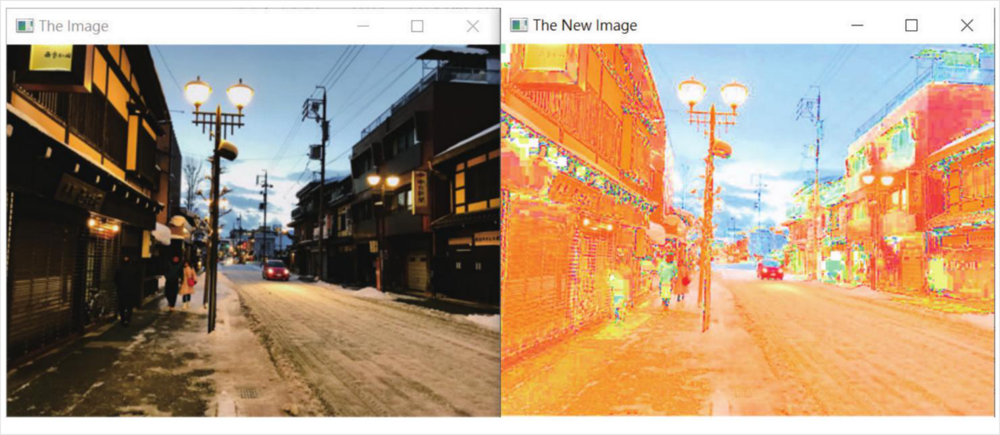
提高明度后的整体效果，参考原书第 4-20 页。
4-7
alpha 通道
除了 B、G、R 三个通道外，图像也可以拥有 A 通道，也就是 alpha 透明度。
alpha 的范围通常是 0 到 255：0 表示完全透明，255 表示完全不透明。带 alpha 的 BGR 图像可称为 BGRA 图像。
bgra_image = cv2.cvtColor(image, cv2.COLOR_BGR2BGRA)
程序实例 ch4_15.py：将 BGR 转为 BGRA，并修改 alpha 通道
# ch4_15.py
import cv2
image = cv2.imread("street.jpg")
cv2.imshow("The Image", image)
bgra_image = cv2.cvtColor(image, cv2.COLOR_BGR2BGRA)
b, g, r, a = cv2.split(bgra_image)
print("列出转成含A通道影像物件后的alpha值")
print(a)
a[:, :] = 32
a32_image = cv2.merge([b, g, r, a])
cv2.imshow("The a32 Image", a32_image)
a.fill(128)
a128_image = cv2.merge([b, g, r, a])
cv2.imshow("The a128 Image", a128_image)
cv2.imwrite("a32.png", a32_image)
cv2.imwrite("a128.png", a128_image)
在普通 OpenCV 显示窗口中，alpha 差异不一定明显；把图像保存为 PNG 后，透明度差异更容易观察。
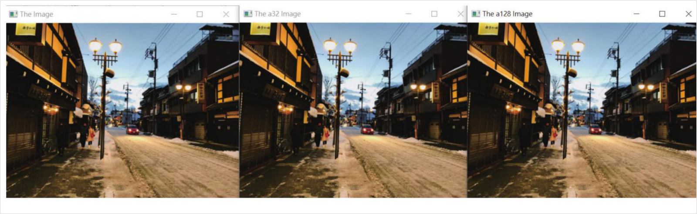
原图、alpha=32 与 alpha=128 的窗口显示结果，参考原书第 4-21 页。
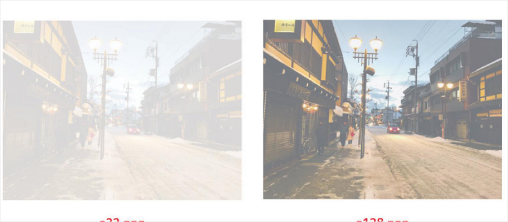
将 alpha 图像保存为 PNG 后的透明度比较，参考原书第 4-22 页。
1. 读取 coffee.jpg，使用 4 种方式显示影像，其中两项分别是 BGR 与 RGB，另外两项是 HSV 的
Saturation 通道与 Value 通道。
import cv2
image = cv2.imread("coffee.jpg")
cv2.imshow("BGR", image)
rgb_image = cv2.cvtColor(image, cv2.COLOR_BGR2RGB)
cv2.imshow("RGB", rgb_image)
hsv_image = cv2.cvtColor(image, cv2.COLOR_BGR2HSV)
hue, saturation, value = cv2.split(hsv_image)
cv2.imshow("saturation", saturation)
cv2.imshow("value", value)
cv2.waitKey(0)
cv2.destroyAllWindows()
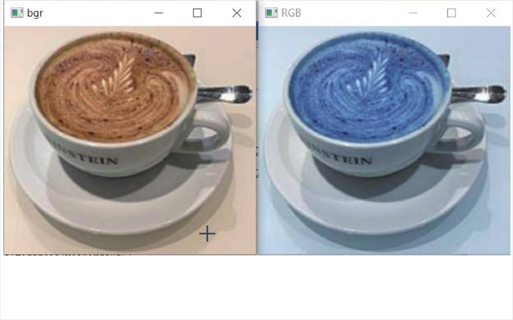
习题 1 的 BGR 与 RGB 参考结果，参考原书第 4-22 页。
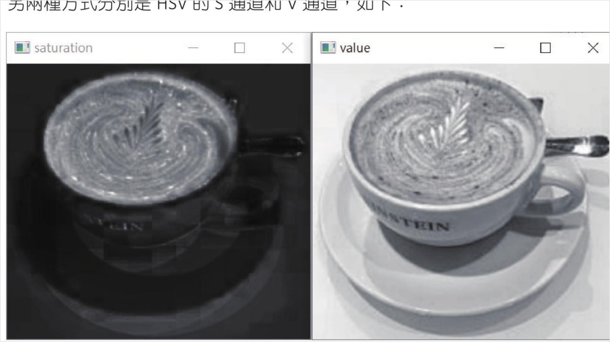
习题 1 的 Saturation 与 Value 参考结果，参考原书第 4-23 页。
2. 重新设计 ch4_11.py，将 HSV 通道分别依 S、V、H 与 V、H、S 顺序合并，
并列出执行结果。
import cv2
image = cv2.imread("street.jpg")
hsv_image = cv2.cvtColor(image, cv2.COLOR_BGR2HSV)
hue, saturation, value = cv2.split(hsv_image)
svh_image = cv2.merge([saturation, value, hue])
vhs_image = cv2.merge([value, hue, saturation])
cv2.imshow("S-V-H", svh_image)
cv2.imshow("V-H-S", vhs_image)
cv2.waitKey(0)
cv2.destroyAllWindows()
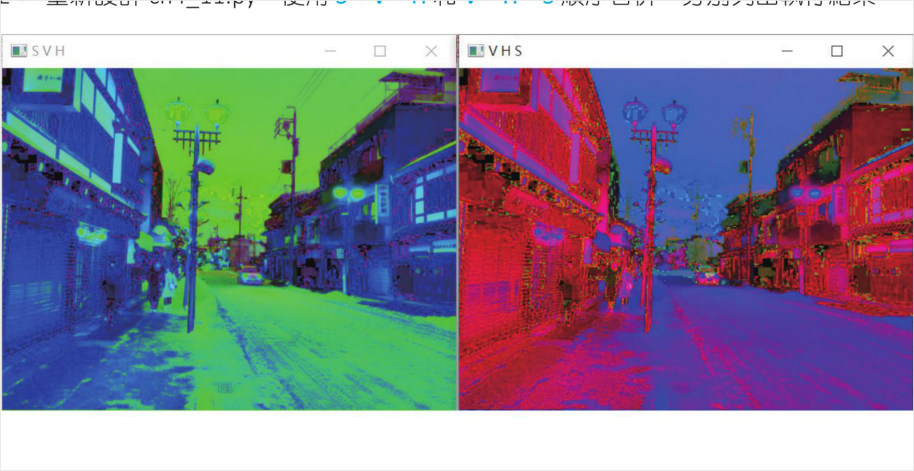
习题 2 的 HSV 通道重排参考结果，参考原书第 4-23 页。